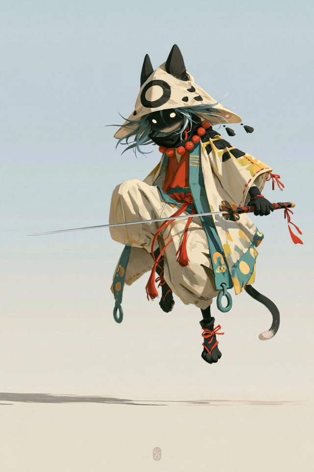
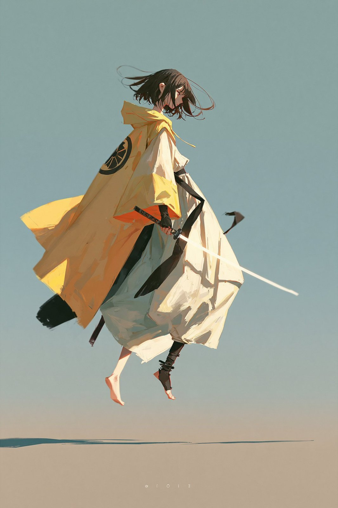
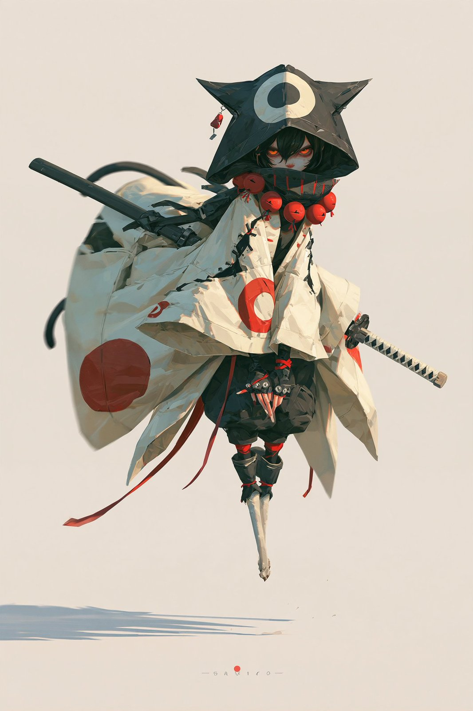
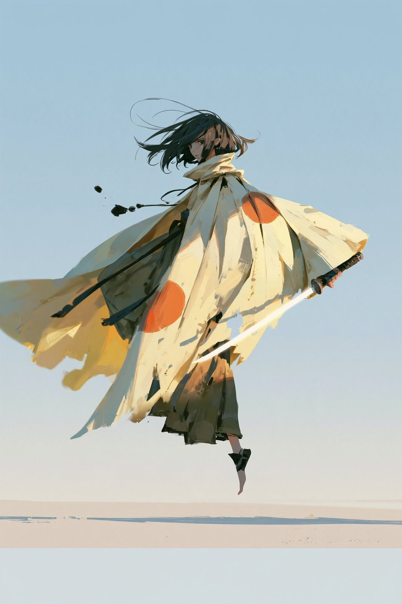

Ronin Cat Samurai
A character design of a cat samurai in a patterned hood and cloak leaping with a sword against a pale sky.
| Creator | Kōda @aimikoda |
|---|---|
| Platform | X |
| Model | Midjourney v8.2 |
| Likes | 219 |
| Posted | 2026-10-05 |
| Visual style | Anime Chinese ink / guofeng |
| Regional vibe | Japanese |
| Genre | Martial arts / action Fantasy / myth |
| Mood | Hype / adrenaline |
Prompt · from the post
Midjourney v8.2 --sref 3917331899 --profile kxxcnp9 --stylize 1000